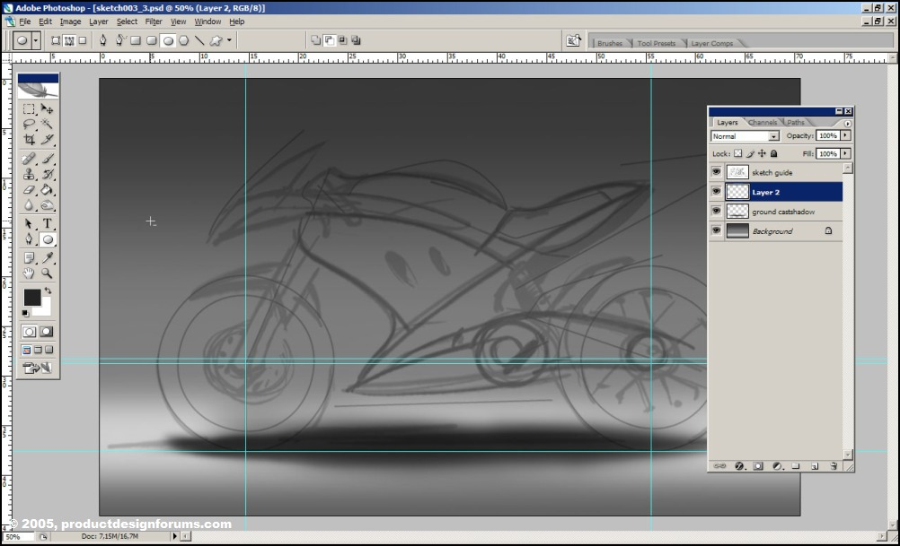

Apunte y recursos para unos multimedios
Ilustración digital de una Motocicleta desarrollado con Photoshop
En Construcción
Hola y bienvenidos a mi segundo tutorial. Tal vez sea extraño hacerlo, pero me gustaría comenzar con un consejo. Mi mente puede ser bastante caótica a veces, durante este tutorial ciertamente lo fue. Cometí una serie de errores tontos y se los mostraré en el curso del tutorial. Así que primero lea todo el tutorial... notará algunas cosas que cambiaría desde el principio si volviera a hacer esta imagen. Si no entiende bien lo que sucedió en un determinado paso del tutorial, siga leyendo, existe la posibilidad de que lo explique en un paso posterior para evitar tener demasiado texto con algunas imágenes.
Si está familiarizado con el campo del diseño conceptual, probablemente haya oído hablar de un tipo llamado Scott Robertson (sitio web drawthrough.com). Ha producido una excelente serie de tutoriales en DVD para The Gnomon Workshop, uno de los cuales muestra el proceso de creación de una bicicleta futurista. Mi tutorial usa las mismas técnicas, aunque quizás mi enfoque difiera aquí y allá. De todos modos, Scott me dio su permiso para publicar este tutorial, por lo que estoy agradecido.
Bien, pongamos esto en marcha. En la captura de pantalla de Photoshop a continuación, puede ver que comencé con un fondo y un boceto aproximado ampliado que preferí renderizar. Entre los bocetos realmente desordenados, probablemente verá algunas líneas más limpias que importé de Rhino. Fueron rastreados desde la vista lateral de una motocicleta Yamaha R1. Los usé para asegurarme de que mis proporciones no estuvieran demasiado alejadas. Coloque el boceto que desea representar en una capa separada y configure la capa en Multiplicar y baje la opacidad de la capa para que sea lo suficientemente visible como para poder usarla para el seguimiento.
El fondo que ve es muy típico para fotografías de estudio de automóviles y otros vehículos. En los renders que hice a continuación, puedes ver el efecto que traté de lograr. Hacer este fondo es realmente fácil, podrías hacerlo todo con un degradado simple, simplemente usé algunos aerógrafos grandes y suaves de la paleta predeterminada de Photoshop. Trata de evitar usar la opacidad del 100%, si la bajas puedes lograr efectos mucho más suaves si haces un par de pasadas con el pincel (piensa que usas un pañuelo con polvo de tiza).

Puse una sombra simple aquí, hará una gran diferencia en unos pocos pasos más. Simplemente use un aerógrafo suave y pequeño para crear las sombras. Ahora probablemente modificaré la sombra más adelante cuando termine el renderizado de la bicicleta, pero por ahora es bueno tener una indicación de un objeto que se muestra en esta configuración de estudio. No querrás renderizar una bicicleta que parezca flotar sobre el suelo. Una sombra da un efecto inmediato de masa.
Observe la configuración básica de la capa:
guía de bocetos: el boceto inicial + dibujo de proporciones de rinoceronte; capa configurada para multiplicarse (para que se muestre sobre todos los objetos a continuación). Establecí la capa en una opacidad de aproximadamente 40%, lo suficiente para que siga siendo útil para arrojar algunas rutas de Photoshop más adelante.
Capa 2: todavía vacía, pero imagina en este lugar todas las capas necesarias para crear la representación de la bicicleta más adelante.
ground castshadow: Creo que este es bastante obvio. Sin embargo, no lo fusiones con el fondo, si quieres mover tu bicicleta más adelante, no tienes que crear un nuevo fondo y sombra si mantienes las cosas separadas.
fondo: la toma de fondo que creamos anteriormente.

ok, paso importante aquí, puedes optar por hacerlo más tarde, pero prefiero establecer algunas guías lo antes posible.
Active las reglas con Ctrl+R, haga clic en la regla izquierda y arrastre hasta que vea la guía en su imagen. Necesitará dos guías verticales, una para cada rueda. Ubícalos donde quieras tener el centro de cada rueda (posición del eje).
Ahora, desde la regla superior, haga clic/arrastre tres guías en su imagen. Coloque uno de ellos donde sus ruedas tocarán el suelo y los otros dos en los ejes de las ruedas. Dejé caer mi eje trasero un poco más alto que el delantero, quiero tener una rueda trasera más grande que la delantera.
Es hora de empezar con las cosas tediosas ;) Paths!!
Comencemos con las ruedas. Haga clic en la herramienta Elipse post-2-1124824135.jpg (U) y antes de dibujar algunas elipses, asegúrese de que en la barra de opciones debajo de la barra de tareas este ícono esté presionado post-2-1124824643.jpg. Esto asegurará que las elipses que está a punto de hacer se hagan como caminos y no como formas. Dibuja una elipse con la tecla Shift presionada. Esto obligará a la elipse a convertirse en un círculo.
Ahora su círculo es probablemente demasiado pequeño o demasiado grande y no está colocado donde lo desea. Resolveremos esto :) Primero tienes que asegurarte de que tienes el complemento activado (Shift+Ctrl+;). Presione la herramienta de selección de ruta post-2-1124824893.jpg, seleccione el círculo que acaba de hacer y arrástrelo a la intersección de sus guías. Con un poco de arrastre hacia la izquierda/derecha y hacia arriba/abajo, pronto verá su nueva ruta circular ajustada a las guías. Con la Herramienta de selección de ruta, ahora escalaremos su ruta para que caiga directamente sobre la guía que hizo para el piso. Elija Edición > Transformar ruta > Escala. Con las manijas alrededor de su ruta, ahora puede escalar su ruta. Asegúrate de mantener presionada la tecla Mayús para que no se estire de nuevo a una elipse :) Una vez más, puede ser necesario un poco de esfuerzo para que las manijas del cuadro de transformación se ajusten a su guía, pero con un poco de persistencia debería funcionar bien. Presiona Enter para aprobar tu escala y ese es un círculo hecho :)
Ahora necesitamos un par de estos círculos. Creé uno para el borde exterior de cada neumático, así como el borde interior donde comenzará la llanta. Se hizo un quinto círculo para la forma donde se articulará la suspensión de la rueda trasera.

Lo primero que probablemente notará aquí es que volteé la imagen horizontalmente. ¿Por qué? Bueno, prefiero dibujar motocicletas con la rueda delantera hacia la izquierda. La foto de referencia que usé mostraba el otro lado de la motocicleta, con la rueda delantera hacia la derecha. Así que mi boceto tenía partes en un lado que estarían en el otro lado en una motocicleta real (al menos, en motocicletas Yamaha en ese rango). Descubrí esto alrededor de este paso en el proceso... así que simplemente volteé mi imagen horizontalmente (observa que si volteas las capas individualmente, su orientación entre sí podría perderse, porque las capas se voltearon alrededor de sus propios puntos de pivote No tendrás este problema cuando voltees toda la imagen de una sola vez... lo que sería más rápido de todos modos, pero es bueno saberlo ;) ).
Ahora es el momento de hacer el resto de los caminos para nuestro renderizado. Las rutas son formas vectoriales que se almacenan dentro de su dibujo como objetos invisibles, lo que significa que cuando guarda su imagen como .jpg o algún otro formato que no sea .psd, no mostrará esas rutas en su imagen. Las rutas se pueden usar para todo tipo de cosas, pero en nuestra imagen las usaremos para crear líneas y selecciones muy suaves. Puedes crear tantos caminos como quieras y siempre puedes seleccionarlos o deseleccionarlos e incluso modificarlos.
Crearemos caminos para casi todas nuestras áreas coloreadas. Puede crear una ruta con la herramienta Pluma post-2-1128105031.jpg (P). Solo asegúrese de tener este botón Post-2-1128105334.jpg Paths seleccionado en su barra de herramientas o, de lo contrario, dibujará formas en lugar de rutas. Dibuja tus caminos alrededor del área que deseas colorear. Tal vez se esté preguntando '¿cómo puedo crear dos líneas exactamente iguales en los bordes de dos áreas? ¿Necesito trazar cuidadosamente todo el borde de cada área coloreada?'. Bueno, no se preocupe porque lo más probable es que pueda superponer los caminos en esas áreas, siempre que prestemos atención al orden de las capas. Esto significa que puede usar el borde de un área y hacer que el área vecina se superponga porque estará debajo de todos modos. Esto puede ser todo un rompecabezas, así que ten cuidado donde crees que puedes superponer caminos y donde será más difícil.
Cuando crea la ruta, un solo clic del mouse para cada nuevo punto de control creará una esquina afilada. Si hace clic y arrastra, creará un punto de control suave.

fuente: renderizado de una moto con Photoshop